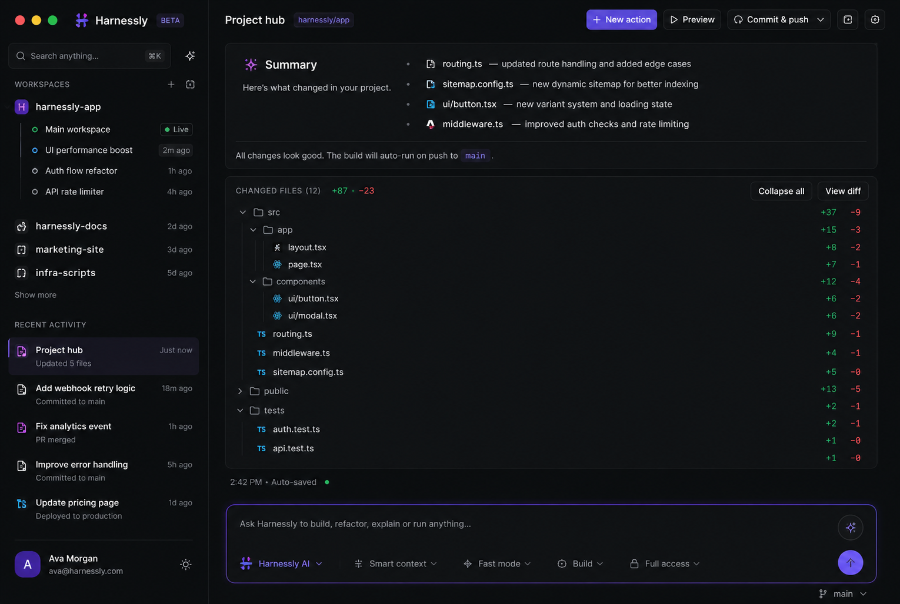

Route prompts to Claude, OpenAI, Gemini, and Perplexity from one modular command center. Compare outputs. Ship faster.
Preview

Features
Send one prompt to multiple providers. Compare results side by side and pick the model that nailed the task.
Save reusable workflows for research, coding, writing, and planning. No rebuilding context from scratch.
Keep project notes, docs, and instructions in one place so every connected model works from the same source of truth.
Bring your own API keys or use managed access. Claude, OpenAI, Gemini, and more as they arrive.
Modules
Route coding, writing, and research to the provider you trust most for each job.
Spot stronger reasoning and better output without switching tabs.
Save project facts, tone rules, and brand docs once. Available everywhere.
Turn repeated workflows into one-click templates your whole team can use.
Draft with one AI, critique with another, polish with the best output.
Use your existing subscriptions. No reselling, no quota caps.
About
Rabbio is for founders, developers, researchers, and operators who know no single model is perfect for every job. Instead of bouncing between tabs, you get one calm workspace where every model can contribute.